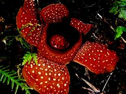

Rafflesia ne possède ni tige, ni feuille, ni racine, mais une fleur actinomorphe à cinq pétales. Sur la face inférieure de la plante se trouvent les étamines et les stigmates. A la base de la fleur, il y a 23 bractées. Les lobes du périanthe s'ouvrent pour laisser apparaître une fleur qui est environ trois fois plus large que le bourgeon maximum. Ainsi, un bourgeon de 15 cm s'ouvrirait en une fleur d’environ 45 cm de diamètre1. C'est la fleur simple la plus grande du monde végétal. Chez certaines espèces comme Rafflesia arnoldii elle peut atteindre un mètre de diamètre et peser jusqu'à 10 kg. Chez des espèces plus petites comme Rafflesia manillana, la fleur présente un diamètre de 20 cm. La Rafflesia ne possède pas de chlorophylle et est incapable de photosynthèse2. Elle dépend donc totalement de la plante grimpante de la famille des vignes tetrastigma qu'elle parasite3 : c'est un holoparasite. Lors de son cycle de développement, elle vit à l'intérieur de son hôte sous forme de filaments. Ce n'est qu'au cours de sa floraison qu'elle est visible extérieurement. Son mode de vie est ainsi comparable à celui d'un champignon. La Rafflésie a été découverte en 1818 dans une forêt tropicale d'Indonésie par le botaniste Joseph Arnold et nommée par Sir Thomas Stamford Raffles, le chef de l'expédition
